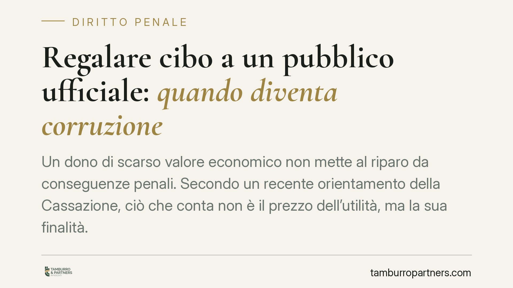

Regalare cibo a un pubblico ufficiale: quando diventa corruzione
Un dono di scarso valore economico non mette al riparo da conseguenze penali. Secondo un recente orientamento della Cassazione, ciò che conta non è il prezzo dell'utilità, ma la sua finalità. Quando il regalo è legato a un atto contrario ai doveri d'ufficio, può integrare corruzione. Ma il confine con le ipotesi residuali resta delicato e ancorato alla prova del nesso.

Il caso e la questione
Una recente pronuncia della Corte di Cassazione penale è tornata sul rapporto tra il valore economico di un dono e la rilevanza penale della condotta nei confronti di un pubblico ufficiale.
*Nota redazionale: il riferimento al numero e all'anno della decisione è in corso di verifica presso la banca dati del CED della Cassazione. In attesa di conferma documentale, trattiamo il principio in termini generali, senza attribuirlo a una massima non ancora validata.*
Il punto giuridico è netto: il modesto valore dell'utilità non esclude di per sé il reato, perché il fulcro della corruzione non è il quantum, ma il collegamento tra ciò che si offre e l'atto richiesto al funzionario.
Va però subito chiarito un aspetto spesso frainteso. L'annullamento di un'assoluzione con rinvio al giudice di merito non equivale a una condanna. La Cassazione, in questi casi, non afferma la colpevolezza: impone al giudice di merito di riesaminare la vicenda valutando correttamente il nesso tra dono e atto. Il destino processuale resta aperto.
Inquadramento normativo
L'art. 319 del codice penale punisce la corruzione propria: il pubblico ufficiale che riceve denaro o "altra utilità" per compiere un atto *contrario* ai doveri del suo ufficio, oppure per ometterlo o ritardarlo. La formula "altra utilità" è volutamente ampia: include qualsiasi vantaggio, anche non monetario, purché apprezzabile. Un bene materiale di poco conto può rientrarvi.
Diverso è il perimetro dell'art. 318 c.p., che disciplina la corruzione per l'esercizio delle funzioni (cosiddetta corruzione impropria): qui l'utilità è collegata al generico esercizio dei poteri del funzionario, senza che si individui un atto contrario ai doveri.
Il discrimine tra le due norme è decisivo. L'esiguità del dono può orientare la qualificazione: un'utilità marginale, non accompagnata da prova di un patto su un atto specifico contrario ai doveri, può spostare la lettura verso l'art. 318, o restare sul solo piano della responsabilità disciplinare, o persino configurare un regalo d'uso privo di rilevanza penale.
In breve: il valore del dono non costruisce il reato, ma può contribuire a smontarlo sul piano probatorio.
Cosa cambia in concreto
Per chi opera a contatto con la pubblica amministrazione — imprese, professionisti, consulenti — il messaggio è duplice.
Da un lato, non esiste una soglia di valore "sicura". Non ci si può trincerare dietro l'idea che un oggetto economico irrisorio sia sempre innocuo: se accompagna la richiesta di un atto illegittimo, può rilevare.
Dall'altro, il valore modesto non è irrilevante nel processo. Sul piano della prova, l'esiguità dell'utilità rende più difficile dimostrare l'esistenza di un sinallagma corruttivo, cioè di quello scambio "do ut des" tra dono e atto che è il cuore del reato. Più il regalo è marginale, più l'accusa deve dimostrare con precisione il collegamento finalistico.
Il giudice, quindi, non guarda il prezzo: guarda il perché. È la finalità — ottenere un atto contrario ai doveri d'ufficio — a qualificare la condotta. E questa finalità va provata, non presunta dal semplice fatto del dono.
Per il pubblico ufficiale la cautela deve essere massima: accettare anche piccole liberalità, se inserite in un contesto di aspettativa di favori, espone a rischi penali e disciplinari.
Checklist operativa
- Mappate i contatti con la PA. Individuate le occasioni in cui dipendenti o collaboratori interagiscono con pubblici funzionari e definite procedure chiare.
- Adottate una policy interna sui doni. Stabilite per iscritto quali liberalità sono vietate, a prescindere dal valore, e vietate ogni dono collegato a pratiche in corso.
- Documentate i rapporti. Conservate traccia di comunicazioni e passaggi procedurali con la PA: la tracciabilità aiuta a dimostrare l'assenza di finalità illecite.
- Formate il personale. Chiarite la differenza tra cortesia d'uso e utilità finalizzata: il discrimine è il collegamento con un atto d'ufficio.
- Valutate ogni episodio dubbio. In presenza di contestazioni o verifiche, ricostruite tempestivamente i fatti e le ragioni di ciascuna condotta.
La chiave interpretativa è sempre la stessa: separare il valore del dono dalla sua finalità. È su quest'ultima che si gioca la qualificazione giuridica e, nel processo, la prova.
---
Contributo informativo a cura di Tamburro & Partners - Avv. Giuseppe Tamburro. Non costituisce parere legale.
Ogni condominio ha una storia a sé.
Se gestisci un'amministrazione e vuoi un confronto su una specifica questione condominiale, scrivi allo studio. Ti rispondiamo entro un giorno lavorativo.